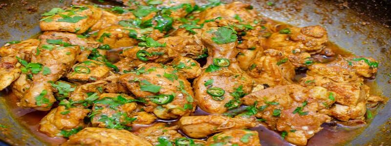

Chicken Karahi

Descirption
Chicken Karahi is a tomato and ginger based, thick masala curry which is though to originate from the Khyber Pakhtunkhwa region. The original, authentic method of making it is a very specific one. As a general rule, Karahis are made from a base of ginger, garlic and tomatoes and also contain fresh green chillis, julienne-cut raw ginger and coriander. It’s a rather thick, jammy gravy and concentrated in flavour yum!
Ingridients
- Chicken
- Garlic
- Ginger
- Spices
- Tomatoes
- Green chillis
- Coriander
Steps
- We start by frying the chicken in a generous amount of oil. We can’t really get away from the oil here, soz.
- We than add in a LOT of minced ginger and garlic. Please none of that pre-made, jarred stuff. FRESH ginger and garlic is KEY here. Remember I said Karahis have a huge emphasis on fragrance and natural flavours? These two ingredients are a MAJOR component of that. We want to fry these just enough for the raw smell to go away – under no circumstances should you allow this to burn because it will taint the flavour of the Karahi.
- We then go ahead and add all our tomatoes and spices. The tomatoes will release TONS of moisture and will break down into a beautifully jammy, thick gravy that will coat the chicken.
- We allow this mix to cook on high, stirring as needed to make sure it doesn’t catch at the bottom of the pan. We don’t put the lid on because we are concentrating the flavour. If we put the lid on, we won’t get that true Karahi look or flavour because we will be containing the moisture in our pan, not allowing the flavours to concentrate. The result will be a boiled/steamed chicken that looks more like a red chicken shorba and will likely break/flake. Not ideal for a Karahi!
- At about the 15-20 minute mark, the gravy will have thickened nicely, the oil will be separating around the edges, the chicken will be cooked and things will be looking almost done. At this point, you can add the chopped coriander and chillis, turn the heat to low and allow everything to simmer together again without the lid. It can simmer for 5 minutes at this
- It’s all ready! Now you can garnish with your slices of ginger and serve as you please
Back to homepage